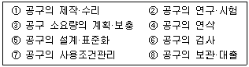
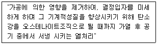
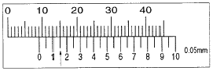
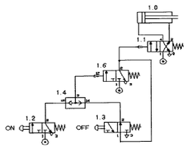

1과목: 설비 진단 및 계측
1. 다음 중 탄성식 압력계에 속하지 않는 것은?
2. 금속류의 직접 접촉에 의한 소음을 막기 위해 윤활이 필요한데, 구름 베어링에 윤활을 필요로 하는 부분으로 적당하지 않은 것은?
3. 금속 전기 도체의 저항 크기를 좌우하는 요인들 중 옳지 않는 것은?
4. 다음 중 관로에서 유량 측정 방법이 아닌 것은?
5. 진동의 크기를 표현하는 방법으로 사용되는 용어의 설명 중 맞지 않는 것은?
6. 자계의 방향이나 강도를 측정할 수 있는 자기 센서는?
7. 진동을 측정하기 위한 3가지 중요한 변수가 아닌 것은?
8. 설비의 신뢰성을 평가하는 척도로 옳지 않은 것은?
9. 회전체에 반사테이프를 부착하고 초점 조정이 용이한 적색 가시광의 LED를 광원으로 이용하여 그 반사광을 검출한 후 신호를 변환시켜 회전주기의 역수로 회전수를 구하는 회전계는?
10. 진동 차단기의 올바른 선택과 유의 사항에 대한 설명 중 잘못 된 것은?
11. 회전축계에서 발생하는 이상 현상과 그때의 주파수 영역을 서로 연결해 놓았다. 관련성이 적은 것은?
12. 특정 주파수 이상을 차단시켜 주는 필터는?
13. 진동의 완전한 1사이클에 걸린 총시간을 무엇이라 하는가?
14. 프로세스의 특성 중 입력 신호에 대한 출력 신호의 특성으로서 시간 영역에서는 인벌류션 적분이고, 주파수 영역에서는 전달함수와 관련된 특성을 무엇이라 하는가?
15. 설비의 정밀 해석 기술로서 전문기술 부서에서 수행하는 기술은?
16. 다음 중 진동 측정 단위로 적당하지 않은 것은?
17. 진동센서의 설치 위치로 적합하지 않은 것은?
18. 비접촉형 변위 검출용 센서 종류에 해당되지 않는 것은?
19. 송풍기나 공기압축기 등 공기동력기계의 소음 발생에 중요한 영향을 주는 요소에 대한 설명 중 적절하지 않은 것은?
20. 음향출력은 음원으로부터 단위시간당 방출되는 총 음에너지를 말하며 그 표시 기호는 W, 단위는 w(watt)이다. 음향 출력 W의 무지향성 음원으로부터 r(m) 떨어진 점에서의 음의 세기를 Ⅰ라 하면, 음원이 자유공간에서 점음원(point source)인 경우의 음향출력(W)과 음의 세기(I)의 관계로 옳은 것은?
2과목: 설비관리
21. 공장에서 설비를 배치할 때 가장 중요한 평가 기준이 되는 것은?
22. 공사의 완급도에 의한 구분에서 설비검사 및 공사 실시시기가 충분한 여유를 가지고 지정된 공사로서 일정계획을 세워서 통제하는 예방보전 공사는 무엇인가?
23. 만성로스에 관한 설명 중 옳지 않은 것은?
24. 공장의 에너지관리 중에서 열관리의 방법에 해당되지 않는 것은?
25. 시스템의 탄생에서부터 사멸에 이르기까지의 라이프 사이클은 4단계로 나누어 볼 수 있다. 다음 중 1단계에 해당하는 것은?
26. 기업의 생산성을 높이는 보전방식을 수단별로 분류 시 해당되지 않는 것은?
27. 설비의 경제성을 평가하기 위한 방법으로 옳지 않은 것은?
28. 다음 중 설비관리조직의 개념이 아닌 것은?
29. 활동기준 원가(ABC : activity-based cost)의 구성요소로 옳지 않은 것은?
30. 계측기의 관리를 수행하기 위하여 준수되지 않아도 되는 것은?
31. 제조원가 추정 시 일반적으로 제조간접비는 간접배부율이라는 형태로 직접비에 할당하는데 다음 중 제조간접비를 배부하는 방법이 아닌 것은?
32. 설비의 잠재 열화현상에 대한 정확한 상태를 예측하기 위하여 직접 설비를 감지(monitoring)하는 방법을 무엇이라 하는가?
33. 가공 및 조립형 설비손실에 포함되지 않는 것은?
34. 설비의 갱신이나 개조에 의한 경비절감을 목적으로 하는 프로젝트를 무엇이라 하는가?
35. 선박 제조업, 건축업, 교량건설 등에 널리 이용되는 설비 배치 방법은?
36. 치공구 관리의 주요 기능을 나열하면 다음과 같다. 치공구의 보전 단계에서 행해지는 주요 기능을 나열한 것은?

37. 고장, 품목변경에 의한 작업준비, 금형교체, 예방보전 등의 시간을 뺀 실제 설비가 작동된 시간을 의미하는 것을 무엇이라 하는가?
38. 설비대장을 작성할 때 구비해야 할 조건 중 무시해도 되는 것은?
39. 자주보전에 대한 설명 중 틀린 것은?
40. 설비의 설계에 의한 이론 사이클 시간과 실제 사이클 시간과의 차이를 무엇이라 하는가?
3과목: 기계일반 및 기계보전
41. 토출관이 짧은 저 양정(전 양정 약 10m 이하) 펌프의 토출관에 설치하는 역류방지 밸브로 적당한 것은?
42. 경도가 매우 높고 발열하면 안 되는 초경합금, 특수강 등의 연삭에 사용되는 숫돌입자는?
43. 다음의 열처리는 무엇에 대한 설명인가?

44. 고장 로스(loss)의 대책으로 잘못된 사항은?
45. 송풍기를 설치한 곳의 기초지반이 연약할 때 가장 큰 영향을 미치는 고장 발생의 현상은?
46. 볼트 너트의 이완 방지법이 아닌 것은?
47. 벨트 풀리의 제도법을 설명한 내용 중 틀린 것은?
48. 다음의 측정기구에서 비교측정기가 아닌 것은?
49. 다음 중 교류아크 용접기의 종류가 아닌 것은?
50. 유량교축용 밸브에 속하지 않는 것은 어느 것인가?
51. 스프링 재료가 갖추어야 할 구비조건으로 적합하지 안은 것은?
52. 감속기의 양호한 조립상태를 유지하기 위한 조치로 적절하지 못한 것은?
53. 압축기의 밸브 플레이트 교환요령에 관한 설명으로 맞는 것은?
54. 관용 나사(pipe thread)의 특징으로 맞지 않는 것은?
55. 신축이음에서 열팽창을 고려하여야 가스켓 선정 등 올바른 정비를 수행할 수 있다. 다음 중 온도에 따른 축의 신축량 λ를 구하는 공식은? (단, t : 온도차, ℓ : 길이, α : 열팽창계수 이다.)
56. 다음 중 물체를 인양하거나 이동할 때 사용 되는 볼트는 어느 것인가?
57. 다음 그림의 화살표로 지시한 버니어캘리퍼스 측정값은 얼마인가?

58. 스퍼기어의 정확한 치형 맞물림에 대한 것으로 맞는 것은?
59. 공기 중에서는 액체상태를 유지하고 공기가 차단되면 중합(重合)이 촉진되어 경화가 일어나는 접착제는?
60. 다음은 크레인의 전동기 고장원인과 대책에 관한 설명이다. 틀린 것은?
4과목: 윤활관리
61. KS M 2129는 유압작동유 KS 규격이다. 이 규격서에서 종류(점도등급) 15, 22, 32, 46, 68, 100, 150, 220은 다음 중 어떤 종류(점도등급)를 따른 것인가?
62. 다음 각 용어에 대한 설명으로 잘못된 것은?
63. 다음 중 윤활유의 열화에서 내부변화인 윤활유 자체의 변질에 해당되는 것은?
64. 다음 중 유압작동유의 유효한 성질에 영향을 많이 주는 것으로 철저히 관리해야 할 주요사항이 아닌 것은?
65. 후막윤활이라고도 하며 가장 이상적인 유막에 의해 마찰면이 완전히 분리되는 윤활상태는?
66. 다음 중 윤활유의 열화에 의해 나타나는 현상이 아닌 것은?
67. 순환급유를 하는 윤활개소의 유욕조를 관찰해 보니 거품이 많이 발생한다. 어떤 첨가제가 부족할 때 이러한 현상이 나타나는가?
68. 윤활제의 성질 중 액체가 유동할 때 나타나는 내부저항을 의미하는 것은?
69. 다음 중 플러싱(flushing) 시기로 적절하지 않은 것은?
70. 기어 윤활의 제반조건에 따른 그 대책을 잘못 설명한 것은?
71. 액체 윤활에 비해 그리스 윤활의 장점이라 할 수 있는 것은?
72. 완전윤활 상태에서 경계윤활로 운전조건이 변화할 수 있는 요인이 아닌 것은?
73. 사용 윤활제의 종류를 단순ㆍ통일화 시키는 목적과 거리가 먼 것은?
74. 윤활유의 작용에 대한 설명으로 잘못 된 것은?
75. 왕복동 공기 압축기에서 내부 윤활유의 원인으로 발생되는 고장이 아닌 것은?
76. 그리스 윤활법에 대한 설명으로 틀린 것은?
77. 기계의 운전 중 윤활고장 현상으로 나타나는 직접적인 증상에 해당하지 않는 것은?
78. 오염도 측정법 중에서 질량법에 의한 방법으로서 NAS 오염도 등급을 기준으로 일반사용에서의 사용한계라고 할 수 있는 기준치는?
79. 설비보전 조직 내 윤활기술자의 임무에 대한 설명으로 틀린 것은?
80. 윤활유가 갖추어야 할 일반적인 성질로 맞지 않는 것은?
5과목: 공유압 및 자동화
81. 유압 에너지를 저장할 수 있는 유압 기기는?
82. 미리 정해진 순서에 따라 동일한 유압원을 이용하여 여러 가지 기계 조작을 순차적으로 수행하는 회로를 무슨 회로라 하는가?
83. 다음 중 공압 장치의 장점으로 틀린 것은?
84. 다음 중 유체의 흐름을 층류와 난류로 구분할 때 사용하는 것은?
85. 서보모터(servo motor)의 전동기 및 제어장치 구비조건에 해당되지 않는 것은?
86. 다음 중 릴레이의 기능이 아닌 것은?
87. 설비보전의 효과측정을 위한 척도로 사용되는 지표가 올바르게 설명된 것은?
88. 3상 전동기의 과열 원인이 아닌 것은?(오류 신고가 접수된 문제입니다. 반드시 정답과 해설을 확인하시기 바랍니다.)
89. 다음 중 연속적인 물리량인 온도를 측정하는 열전대의 출력 신호의 형태는?
90. 실린더를 임의의 위치에서 고정시킬 수 있도록 밸브의 중립위치에서 모든 포트를 막은 형식의 4/3way 밸브 종류는?
91. 공압 실린더의 설치형식에 따른 분류가 아닌 것은?
92. 공압 밸브 중 OR 논리를 만족시키는 밸브는?
93. 다음 회로에 대한 설명 중 옳은 것은?

94. 유압유 중에 공기가 아주 작은 기포 상태로 섞여지는 현상 또는 섞여져 있는 상태를 무엇이라고 하는가?
95. 유압실린더의 속도 제어 중 실린더에서 유출되는 유압작동유의 유량을 제어하는 방식은?
96. 유압 펌프의 설명으로 맞는 것은?
97. 압축 공기의 생산에서 사용까지의 단계가 순서대로 올바르게 표현된 것은?
98. 핸들링(Handling)의 용어를 설명한 것으로 옳지 않은 것은?
99. 자동화 시스템을 사용하는 일반적인 목적이 아닌 것은?
100. 회전식 공기 압축기가 아닌 것은?